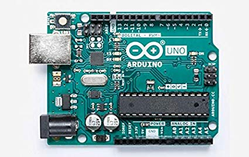
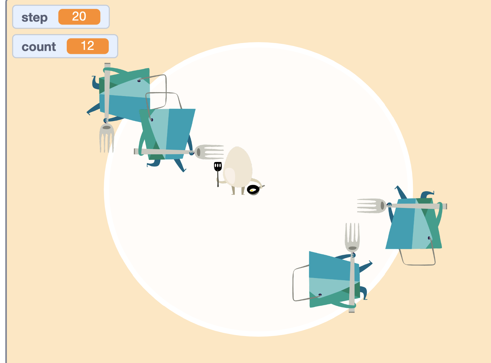

ソフトウェアネットワーク演習2
session:1
Arduino
センサー２つを使ってそれぞれ違う反応を示す電球をつくる
そもそもそんなに楽しんで出来なかったので、楽しさを感じられるようになったらもっとできたかも。
session:2
スクラッチ
簡単なミニゲームを作る
走ってくるバケツを避け続けるゲームを作った。時間経過で難易度が上がっていくようになっている。
普通に自分でプレイしていてもいい感じの暇つぶしになるくらいのできだったので、結構満足。
これだけで完成している感はあるが、難易度上昇以外にも楽しめる要素をいれればよかったかな？
session:3
インタラクティブな物をp5.jsで作る
息を吹きかけると消える火を作る
けっこう満足いく出来になった。
放置しているとけっこう重くなっていくので、自動リフレッシュいれれるとよかったかも